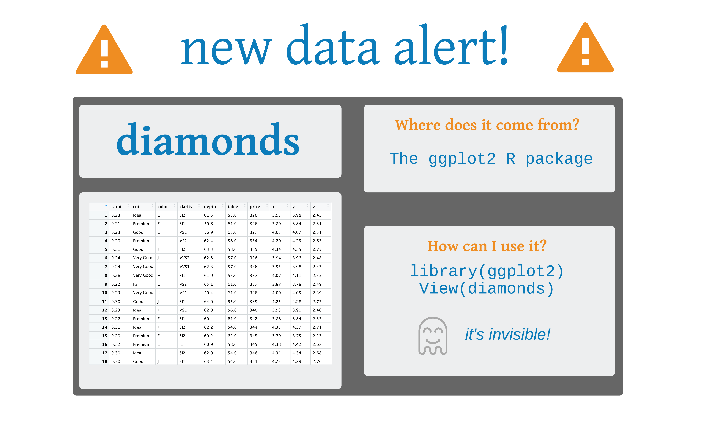
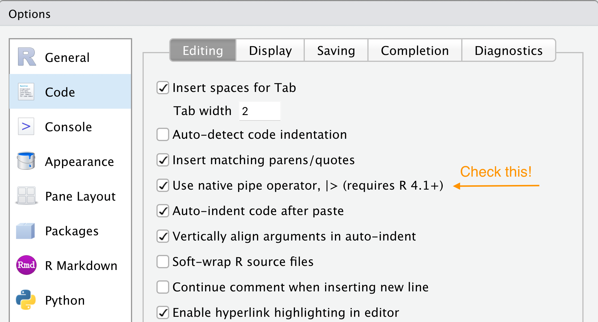

Wrangling data with dplyr
2025-08-09
Art by Allison Horst
The main verbs of dplyr

select()
filter()
mutate()
arrange()
summarize()
group_by()
The main verbs of dplyr
select() = Subset columns (variables)
filter()
mutate()
arrange()
summarize()
group_by()
select()
select()
# A tibble: 53,940 × 10
carat cut color clarity depth table price x y
<dbl> <ord> <ord> <ord> <dbl> <dbl> <int> <dbl> <dbl>
1 0.23 Ideal E SI2 61.5 55 326 3.95 3.98
2 0.21 Premium E SI1 59.8 61 326 3.89 3.84
3 0.23 Good E VS1 56.9 65 327 4.05 4.07
4 0.29 Premium I VS2 62.4 58 334 4.2 4.23
5 0.31 Good J SI2 63.3 58 335 4.34 4.35
6 0.24 Very G… J VVS2 62.8 57 336 3.94 3.96
7 0.24 Very G… I VVS1 62.3 57 336 3.95 3.98
8 0.26 Very G… H SI1 61.9 55 337 4.07 4.11
9 0.22 Fair E VS2 65.1 61 337 3.87 3.78
10 0.23 Very G… H VS1 59.4 61 338 4 4.05
# ℹ 53,930 more rows
# ℹ 1 more variable: z <dbl>
select()
select()
# A tibble: 53,940 × 4
carat cut color clarity
<dbl> <ord> <ord> <ord>
1 0.23 Ideal E SI2
2 0.21 Premium E SI1
3 0.23 Good E VS1
4 0.29 Premium I VS2
5 0.31 Good J SI2
6 0.24 Very Good J VVS2
7 0.24 Very Good I VVS1
8 0.26 Very Good H SI1
9 0.22 Fair E VS2
10 0.23 Very Good H VS1
# ℹ 53,930 more rowsselect()
gapminder
# A tibble: 1,704 × 6
country continent year lifeExp pop gdpPercap
<fct> <fct> <int> <dbl> <int> <dbl>
1 Afghanistan Asia 1952 28.8 8425333 779.
2 Afghanistan Asia 1957 30.3 9240934 821.
3 Afghanistan Asia 1962 32.0 10267083 853.
4 Afghanistan Asia 1967 34.0 11537966 836.
5 Afghanistan Asia 1972 36.1 13079460 740.
6 Afghanistan Asia 1977 38.4 14880372 786.
7 Afghanistan Asia 1982 39.9 12881816 978.
8 Afghanistan Asia 1987 40.8 13867957 852.
9 Afghanistan Asia 1992 41.7 16317921 649.
10 Afghanistan Asia 1997 41.8 22227415 635.
# ℹ 1,694 more rows
Your Turn 1
Alter the code to select just the pop column:
Your Turn 1
Make a prediction
Which of these is NOT a way to select the country and continent columns together?
Make a prediction
Which of these is NOT a way to select the country and continent columns together?
The main verbs of dplyr
select()
filter() = Subset rows by value
mutate()
arrange()
summarize()
group_by()
filter()
Predicates: TRUE or FALSE statements
Comparisons: >, >=, <, <=, != (not equal), and == (equal).
Operators: & is “and”, | is “or”, and ! is “not”
%in%
filter()
# A tibble: 4 × 10
carat cut color clarity depth table price x y
<dbl> <ord> <ord> <ord> <dbl> <dbl> <int> <dbl> <dbl>
1 3.22 Ideal I I1 62.6 55 12545 9.49 9.42
2 3.5 Ideal H I1 62.8 57 12587 9.65 9.59
3 3.01 Ideal J SI2 61.7 58 16037 9.25 9.2
4 3.01 Ideal J I1 65.4 60 16538 8.99 8.93
# ℹ 1 more variable: z <dbl>Your turn 2
Show:
All of the rows where pop is greater than or equal to 100000
All of the rows for El Salvador
All of the rows that have a missing value for year (no need to edit this code)
Your turn 2
Show:
All of the rows where pop is greater than or equal to 100000
All of the rows for El Salvador
All of the rows that have a missing value for year (no need to edit this code)
filter()
# A tibble: 6 × 10
carat cut color clarity depth table price x y
<dbl> <ord> <ord> <ord> <dbl> <dbl> <int> <dbl> <dbl>
1 3.22 Ideal I I1 62.6 55 12545 9.49 9.42
2 3.5 Ideal H I1 62.8 57 12587 9.65 9.59
3 3.04 Very Go… I SI2 63.2 59 15354 9.14 9.07
4 4 Very Go… I I1 63.3 58 15984 10.0 9.94
5 3.01 Ideal J SI2 61.7 58 16037 9.25 9.2
6 3.01 Ideal J I1 65.4 60 16538 8.99 8.93
# ℹ 1 more variable: z <dbl>Your turn 3
Use Boolean operators to alter the code below to return only the rows that contain:
El Salvador
Countries that had populations over 100000 in 1960 or earlier
Your turn 3
Use Boolean operators to alter the code below to return only the rows that contain:
El Salvador
Countries that had populations over 100000 in 1960 or earlier
The main verbs of dplyr
select()
filter()
mutate() = Change or add a variable
arrange()
summarize()
group_by()
mutate()
mutate()
mutate()
# A tibble: 53,940 × 12
carat cut color clarity depth table price x y
<dbl> <ord> <ord> <ord> <dbl> <dbl> <int> <dbl> <dbl>
1 0.23 Ideal E SI2 61.5 55 326 3.95 3.98
2 0.21 Premium E SI1 59.8 61 326 3.89 3.84
3 0.23 Good E VS1 56.9 65 327 4.05 4.07
4 0.29 Premium I VS2 62.4 58 334 4.2 4.23
5 0.31 Good J SI2 63.3 58 335 4.34 4.35
6 0.24 Very G… J VVS2 62.8 57 336 3.94 3.96
7 0.24 Very G… I VVS1 62.3 57 336 3.95 3.98
8 0.26 Very G… H SI1 61.9 55 337 4.07 4.11
9 0.22 Fair E VS2 65.1 61 337 3.87 3.78
10 0.23 Very G… H VS1 59.4 61 338 4 4.05
# ℹ 53,930 more rows
# ℹ 3 more variables: z <dbl>, log_price <dbl>,
# log_pricesq <dbl>The main verbs of dplyr
select()
filter()
mutate()
arrange() = Sort the data set
summarize()
group_by()
arrange()
arrange()
# A tibble: 53,940 × 10
carat cut color clarity depth table price x y
<dbl> <ord> <ord> <ord> <dbl> <dbl> <int> <dbl> <dbl>
1 0.23 Ideal E SI2 61.5 55 326 3.95 3.98
2 0.21 Premium E SI1 59.8 61 326 3.89 3.84
3 0.23 Good E VS1 56.9 65 327 4.05 4.07
4 0.29 Premium I VS2 62.4 58 334 4.2 4.23
5 0.31 Good J SI2 63.3 58 335 4.34 4.35
6 0.24 Very G… J VVS2 62.8 57 336 3.94 3.96
7 0.24 Very G… I VVS1 62.3 57 336 3.95 3.98
8 0.26 Very G… H SI1 61.9 55 337 4.07 4.11
9 0.22 Fair E VS2 65.1 61 337 3.87 3.78
10 0.23 Very G… H VS1 59.4 61 338 4 4.05
# ℹ 53,930 more rows
# ℹ 1 more variable: z <dbl>arrange()
# A tibble: 53,940 × 10
carat cut color clarity depth table price x y
<dbl> <ord> <ord> <ord> <dbl> <dbl> <int> <dbl> <dbl>
1 0.22 Fair E VS2 65.1 61 337 3.87 3.78
2 0.25 Fair E VS1 55.2 64 361 4.21 4.23
3 0.23 Fair G VVS2 61.4 66 369 3.87 3.91
4 0.27 Fair E VS1 66.4 58 371 3.99 4.02
5 0.3 Fair J VS2 64.8 58 416 4.24 4.16
6 0.3 Fair F SI1 63.1 58 496 4.3 4.22
7 0.34 Fair J SI1 64.5 57 497 4.38 4.36
8 0.37 Fair F SI1 65.3 56 527 4.53 4.47
9 0.3 Fair D SI2 64.6 54 536 4.29 4.25
10 0.25 Fair D VS1 61.2 55 563 4.09 4.11
# ℹ 53,930 more rows
# ℹ 1 more variable: z <dbl>desc()
# A tibble: 53,940 × 10
carat cut color clarity depth table price x y
<dbl> <ord> <ord> <ord> <dbl> <dbl> <int> <dbl> <dbl>
1 2.01 Fair G SI1 70.6 64 18574 7.43 6.64
2 2.02 Fair H VS2 64.5 57 18565 8 7.95
3 4.5 Fair J I1 65.8 58 18531 10.2 10.2
4 2 Fair G VS2 67.6 58 18515 7.65 7.61
5 2.51 Fair H SI2 64.7 57 18308 8.44 8.5
6 3.01 Fair I SI2 65.8 56 18242 8.99 8.94
7 3.01 Fair I SI2 65.8 56 18242 8.99 8.94
8 2.32 Fair H SI1 62 62 18026 8.47 8.31
9 5.01 Fair J I1 65.5 59 18018 10.7 10.5
10 1.93 Fair F VS1 58.9 62 17995 8.17 7.97
# ℹ 53,930 more rows
# ℹ 1 more variable: z <dbl>Your turn 4
Arrange gapminder by year. Add lifeExp as a second (tie breaking) variable to arrange on.
Which country had the lowest life expectancy in 1952?
Your turn 4
# A tibble: 1,704 × 6
country continent year lifeExp pop gdpPercap
<fct> <fct> <int> <dbl> <int> <dbl>
1 Afghanistan Asia 1952 28.8 8425333 779.
2 Gambia Africa 1952 30 284320 485.
3 Angola Africa 1952 30.0 4232095 3521.
4 Sierra Leone Africa 1952 30.3 2143249 880.
5 Mozambique Africa 1952 31.3 6446316 469.
6 Burkina Faso Africa 1952 32.0 4469979 543.
7 Guinea-Bissau Africa 1952 32.5 580653 300.
8 Yemen, Rep. Asia 1952 32.5 4963829 782.
9 Somalia Africa 1952 33.0 2526994 1136.
10 Guinea Africa 1952 33.6 2664249 510.
# ℹ 1,694 more rowsYour turn 5
Use desc() to find the country with the highest gdpPercap.
Your turn 5
# A tibble: 1,704 × 6
country continent year lifeExp pop gdpPercap
<fct> <fct> <int> <dbl> <int> <dbl>
1 Kuwait Asia 1957 58.0 212846 113523.
2 Kuwait Asia 1972 67.7 841934 109348.
3 Kuwait Asia 1952 55.6 160000 108382.
4 Kuwait Asia 1962 60.5 358266 95458.
5 Kuwait Asia 1967 64.6 575003 80895.
6 Kuwait Asia 1977 69.3 1140357 59265.
7 Norway Europe 2007 80.2 4627926 49357.
8 Kuwait Asia 2007 77.6 2505559 47307.
9 Singapore Asia 2007 80.0 4553009 47143.
10 Norway Europe 2002 79.0 4535591 44684.
# ℹ 1,694 more rowsDetour: The Pipe |>
Detour: The Pipe
Detour: The Pipe
Passes the result of one function to another function
Keyboard shortcuts
Insert <- with alt/opt + -
Insert |> with ctrl/cmd + shift + m
Keyboard shortcuts
Tools > Global Options > Code
The magrittr pipe
In the wild, you’ll see %>% a lot. This is the old pipe prior to when R had a built-in one. Either pipe is fine, but we’ll use the so-called native pipe |>
See R for Data Science for more info
Your turn 6
Use |> to write a sequence of functions that:
Filter only countries that are in the continent of Oceania.
Select the country, year and lifeExp columns
Arrange the results so that the highest life expectancy is at the top.
Your turn 6
gapminder |>
filter(continent == "Oceania") |>
select(country, year, lifeExp) |>
arrange(desc(lifeExp))# A tibble: 24 × 3
country year lifeExp
<fct> <int> <dbl>
1 Australia 2007 81.2
2 Australia 2002 80.4
3 New Zealand 2007 80.2
4 New Zealand 2002 79.1
5 Australia 1997 78.8
6 Australia 1992 77.6
7 New Zealand 1997 77.6
8 New Zealand 1992 76.3
9 Australia 1987 76.3
10 Australia 1982 74.7
# ℹ 14 more rowsChallenge!
1. Import the diabetes data from the importing data. A copy of the CSV file is available in this folder.
2. Add the variable bmi to the data set using height and weight using the formula: (weight / height^2) * 703
3. Select just id, glyhb, and the new variable you created.
4. Filter rows that have BMI > 35. How many rows and columns are in your new data set?
# A tibble: 61 × 3
id glyhb bmi
<dbl> <dbl> <dbl>
1 1001 4.44 37.4
2 1002 4.64 48.4
3 1022 5.78 35.8
4 1029 4.97 40.8
5 1253 4.67 36.0
6 1254 12.7 42.5
7 1280 5.10 38.3
8 1501 4.41 40.0
9 2753 5.57 35.3
10 2757 6.33 35.3
# ℹ 51 more rowsThe main verbs of dplyr
select()
filter()
mutate()
arrange()
summarize() = Summarize the data
group_by() = Group the data
summarize()
summarize()
Your turn 7
Use summarise() to compute these statistics about the gapminder data set:
1. The first (min()) year in the data
2. The last (max()) year in the data
3. The total number of observations (n()) and the total number of unique countries in the data (n_distinct())
Your turn 7
group_by()
group_by()
# A tibble: 53,940 × 10
# Groups: cut [5]
carat cut color clarity depth table price x y
<dbl> <ord> <ord> <ord> <dbl> <dbl> <int> <dbl> <dbl>
1 0.23 Ideal E SI2 61.5 55 326 3.95 3.98
2 0.21 Premium E SI1 59.8 61 326 3.89 3.84
3 0.23 Good E VS1 56.9 65 327 4.05 4.07
4 0.29 Premium I VS2 62.4 58 334 4.2 4.23
5 0.31 Good J SI2 63.3 58 335 4.34 4.35
6 0.24 Very G… J VVS2 62.8 57 336 3.94 3.96
7 0.24 Very G… I VVS1 62.3 57 336 3.95 3.98
8 0.26 Very G… H SI1 61.9 55 337 4.07 4.11
9 0.22 Fair E VS2 65.1 61 337 3.87 3.78
10 0.23 Very G… H VS1 59.4 61 338 4 4.05
# ℹ 53,930 more rows
# ℹ 1 more variable: z <dbl>group_by()
# A tibble: 5 × 3
cut n mean_price
<ord> <int> <dbl>
1 Fair 1610 4359.
2 Good 4906 3929.
3 Very Good 12082 3982.
4 Premium 13791 4584.
5 Ideal 21551 3458.Your turn 8
Extract the rows where continent == "Europe". Then use group_by() to group by country. Finally, use summarize() to compute:
1. The total number of observations for each country in Europe
2. The lowest observed life expectancy for each country
Your turn 8
gapminder |>
filter(continent == "Europe") |>
group_by(country) |>
summarize(n = n(), min_le = min(lifeExp))# A tibble: 30 × 3
country n min_le
<fct> <int> <dbl>
1 Albania 12 55.2
2 Austria 12 66.8
3 Belgium 12 68
4 Bosnia and Herzegovina 12 53.8
5 Bulgaria 12 59.6
6 Croatia 12 61.2
7 Czech Republic 12 66.9
8 Denmark 12 70.8
9 Finland 12 66.6
10 France 12 67.4
# ℹ 20 more rows